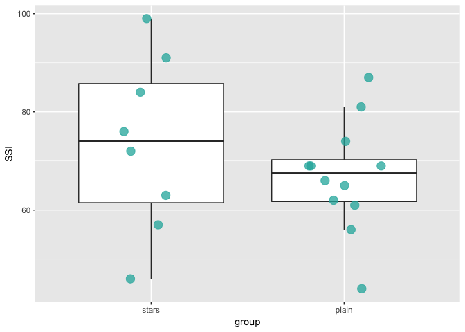
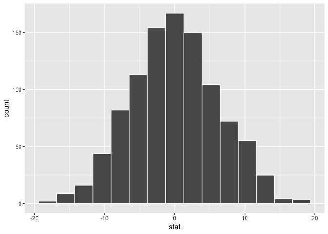
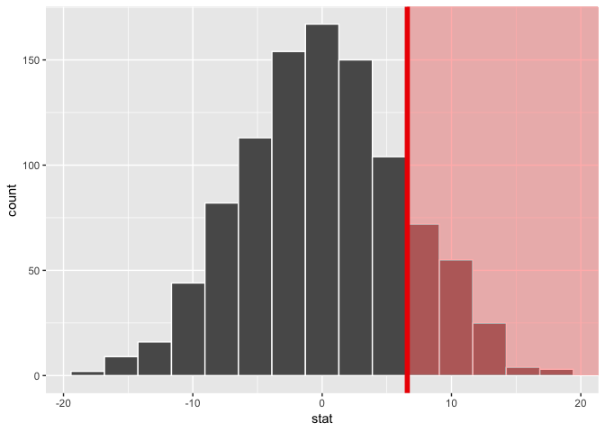
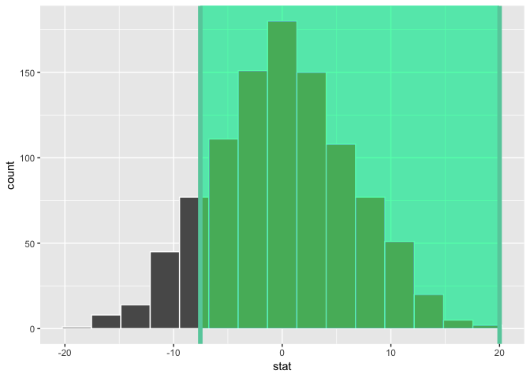

CONJ620: CM 3.4
Permutation tests
Alison Presmanes Hill
Logistics
- A complete knitted
htmlfile is due on Sakai by Tuesday August 21rd (2:30pm). - This lab is based on the assigned reading that includes ModernDive Chapter 10.7. Please open and follow closely!
- Note that in class, several people were getting a mysterious
glueerror in their console. The solution that seemed to work was to explicitly install thegluepackage using:install.packages("glue"), then restarting RStudio.
Packages
library(tidyverse)
library(infer)
library(skimr)Introduction
You have my permission to watch this video, stop it at 4 minutes 5 seconds: https://www.youtube.com/watch?v=PdLPe7XjdKc
Let's play with some obviously fictitious data. Our outcome measure is the Sneetch Snootiness Index (SSI), which we measured for both plain-bellied sneetches (plain) and those with stars upon thars (stars). Here is our data for N = 20 sneetches, where I have SSI scores for m = 8 star-bellied sneetches and n = 12 plain-bellied sneetches.
stars <- c(84, 57, 63, 99, 72, 46, 76, 91, rep(NA, 4))
plain <- c(81, 74, 56, 69, 66, 62, 69, 61, 87, 65, 44, 69)
sneetches <- data.frame(stars, plain)
sneetches_tidy <- sneetches %>%
gather(group, SSI, factor_key = TRUE) %>%
filter(!is.na(SSI))
sneetches_tidy group SSI
1 stars 84
2 stars 57
3 stars 63
4 stars 99
5 stars 72
6 stars 46
7 stars 76
8 stars 91
9 plain 81
10 plain 74
11 plain 56
12 plain 69
13 plain 66
14 plain 62
15 plain 69
16 plain 61
17 plain 87
18 plain 65
19 plain 44
20 plain 69
Let's look at our data for N = 20 sneetches, where I have SSI scores for m = 8 star-bellied sneetches and n = 12 plain-bellied sneetches.
sneetch_plot <- ggplot(sneetches_tidy, aes(x = group,
y = SSI)) +
geom_boxplot(outlier.shape = NA) +
geom_jitter(position = position_jitter(height = 0, width = 0.2),
fill = "lightseagreen",
colour = "lightseagreen",
alpha = 0.75,
size = 4,
na.rm=TRUE)
suppressWarnings(print(sneetch_plot))
Model of \(H_0\)
We'll use this data to compare two means using a randomization or permutation test. Our null/alternative hypotheses are:
\(H_0: \mu_{stars} \leq \mu_{plain}\), which can also be written as \(H_0: \mu_{stars} - \mu_{plain} \leq 0\).
Our alternative hypothesis will be of the form \(H_a: \mu_1 \star \mu_2\) (or \(H_a: \mu_1 - \mu_2 \, \star \, 0\)) where \(\star\) = \(<\), \(\ne\), or \(>\). For this example, we'll use: \(H_a: \mu_{stars} > \mu_{plain}\).
So to sum up:
- \(H_0: \mu_{stars} - \mu_{plain} \leq 0\)
- \(H_a: \mu_{stars} - \mu_{plain} > 0\)
Do we have reason to believe, based on the sample distributions of SSIs over the two groups of sneetches, that there is a significant difference between the mean SSI values for star-bellied compared to plain-bellied sneetches? It’s hard to say just based on the plots.
Test statistic \(\delta\)
We are, therefore, interested in seeing whether the difference in the sample means, \(\bar{x}_{stars} - \bar{x}_{plain}\), is statistically greater than 0. We can now come back to our infer pipeline for computing our observed statistic. Note the order argument that shows the mean value for "plain" being subtracted from the mean value of "stars".
Observed effect \(\delta^*\)
Our first step is to calculate the difference between sample means you got!
Note: in class I used a way harder way- this way is much easier :)
mean_diff <- sneetches_tidy %>%
specify(SSI ~ group) %>%
calculate(stat = "diff in means",
order = c("stars", "plain"))
mean_diff# A tibble: 1 x 1
stat
<dbl>
1 6.58Our goal next is to figure out a random process with which to simulate the null hypothesis being true. Recall that \(H_0: \mu_{stars} - \mu_{plain} \leq 0\) corresponds to us assuming that the population means are the same (or that stars are less than plain). We would like to assume the null is true and perform a random process to generate() data in the model of the null hypothesis.
Reshuffling
The basic idea to a permutation test is that we reshuffle the deck. Here the deck is our observed sample data, and when we reshuffle, we are re-ordering the samples according to the null hypothesis as if the group that each observation came from (stars versus plain) does not matter. First, imagine that all of our observed SSI scores are stored in one vector (both groups stacked on top of each other), and numbered 1 through 20 (regardless of group).
Next, we shuffle the non-missing observation numbers (rows 1:20), choosing a new stars group of size n = 8 from the n = 20 observed data points without replacement. Let's do this once:
set.seed(2018)
sn1 <- sneetches_tidy %>%
specify(SSI ~ group) %>%
hypothesize(null = "independence") %>%
generate(reps = 1, type = "permute")
sn1Response: SSI (numeric)
Explanatory: group (factor)
Null Hypothesis: independence
# A tibble: 20 x 3
# Groups: replicate [1]
SSI group replicate
<dbl> <fct> <int>
1 76 stars 1
2 81 stars 1
3 57 stars 1
4 99 stars 1
5 91 stars 1
6 72 stars 1
7 44 stars 1
8 65 stars 1
9 69 plain 1
10 69 plain 1
11 87 plain 1
12 46 plain 1
13 61 plain 1
14 69 plain 1
15 56 plain 1
16 74 plain 1
17 66 plain 1
18 62 plain 1
19 63 plain 1
20 84 plain 1Take a few minutes to confirm for yourself, using skimr for example, that:
- The overall \(N\) is the same in this resample as in our original sample (20)
- The per-group \(n\)'s are the same in this resample as in our original sample
- The overall mean of
SSIis the same as in your original sample data - The group means of
SSIin this resample are different from in your original sample data (this is what will change for each replicate!)
# original mean
skim(sneetches_tidy)Skim summary statistics
n obs: 20
n variables: 2
Variable type: factor
variable missing complete n n_unique top_counts ordered
group 0 20 20 2 pla: 12, sta: 8, NA: 0 FALSE
Variable type: numeric
variable missing complete n mean sd p0 p25 p50 p75 p100 hist
SSI 0 20 20 69.55 14.13 44 61.75 69 77.25 99 ▃▃▅▇▅▃▃▂# original means by group
sneetches_tidy %>%
group_by(group) %>%
skim()Skim summary statistics
n obs: 20
n variables: 2
group variables: group
Variable type: numeric
group variable missing complete n mean sd p0 p25 p50 p75 p100
stars SSI 0 8 8 73.5 17.78 46 61.5 74 85.75 99
plain SSI 0 12 12 66.92 11.17 44 61.75 67.5 70.25 87
hist
▇▇▇▇▇▇▇▇
▂▁▂▆▇▂▂▂# resample mean
skim(sn1)Skim summary statistics
n obs: 20
n variables: 3
group variables: replicate
Variable type: factor
replicate variable missing complete n n_unique top_counts
1 group 0 20 20 2 pla: 12, sta: 8, NA: 0
ordered
FALSE
Variable type: numeric
replicate variable missing complete n mean sd p0 p25 p50 p75
1 SSI 0 20 20 69.55 14.13 44 61.75 69 77.25
p100 hist
99 ▃▃▅▇▅▃▃▂# resampled means by group
sn1 %>%
group_by(group) %>%
skim()Skim summary statistics
n obs: 20
n variables: 3
group variables: group
Variable type: integer
group variable missing complete n mean sd p0 p25 p50 p75 p100 hist
stars replicate 0 8 8 1 0 1 1 1 1 1 ▁▁▁▇▁▁▁▁
plain replicate 0 12 12 1 0 1 1 1 1 1 ▁▁▁▇▁▁▁▁
Variable type: numeric
group variable missing complete n mean sd p0 p25 p50 p75 p100
stars SSI 0 8 8 73.12 17.87 44 63 74 83.5 99
plain SSI 0 12 12 67.17 11.24 46 61.75 67.5 70.25 87
hist
▃▃▁▃▇▃▃▃
▂▂▂▇▇▂▁▅Remember, our observed mean is 6.58. So, this new resampled mean difference is 5.96, calculated as if it didn't matter if the real stars were stars, is much smaller. Now, this was just one possible resample. How many possible ways are there to choose 8 observations from 20?
choose(20, 8)[1] 125970# choose(20, 12) same thingThat is, there are 125970 possible permutations: \[\binom{m + n}{m} = \binom{8 + 12}{8} = 125970\]
This number is not so crazy because we have pretty small sample sizes, but with real data, you'll often find the number of possible permutations is pretty unmanageable. So we make do with an approximation: we will take a large number of resamples, resampling with replacement from the null distribution of \(\binom{m + n}{m}\) possible resamples. Sampling without replacement would be more accurate, but it would require too much time and memory to check the uniqueness of each resample. Long story short: we don't create all possible resamples in a permutation test, which is why this is referred to as a Monte Carlo permutation test.
Distribution of \(\delta\) under \(H_0\)
We can now proceed in a similar way to what we have done previously with bootstrapping by repeating this process many times to create simulated samples, assuming the null hypothesis is true.
set.seed(1980)
null_distn <- sneetches_tidy %>%
specify(SSI ~ group) %>%
hypothesize(null = "independence") %>%
generate(reps = 1000, type = "permute") %>%
calculate(stat = "diff in means",
order = c("stars", "plain"))A null distribution of simulated differences in sample means is created with the specification of stat = "diff in means" for the calculate() step. The null distribution is similar to the bootstrap distribution we saw in Chapter 9, but remember that it consists of statistics generated assuming the null hypothesis is true. Let's plot the permutation distribution, which is the distribution of mean differences across all permutation resamples:
null_distn %>%
visualize()
So here, what you are looking at, is our new null distribution- one that is not based on any distributional assumptions. Rather, this null distribution (the permutation distribution) is based on our sample data, and we ask "in how many permutation resamples did we get a [insert statistic here] as or more extreme than the one we got with our actual sample data?"
So, how many resampled mean differences are as or more extreme than the one we got? The answer to this question is why we calculate the p-value.
The p-value
Remember that we are interested in seeing where our observed sample mean difference of 6.5833333 falls on this null/randomization distribution. We are interested stars being greater than plain, so "more extreme" corresponds to values in the right tail on the distribution. Let's shade our null distribution to show a visual representation of our \(p\)-value:
null_distn %>%
visualize(obs_stat = mean_diff, direction = "greater")
Remember that the observed difference in means was 6.5833333. We have shaded red all values at or above that value. By giving obs_stat = mean_diff, a vertical darker line is also shown at 6.5833333.
At this point, it is important to take a guess as to what the \(p\)-value may be. We can see that there are only a few permuted differences as or more large than our observed effect. Lastly, we calculate the \(p\)-value directly using infer:
mean_diff_number <- mean_diff %>%
pull(1)
(pvalue <- null_distn %>%
get_pvalue(obs_stat = mean_diff, direction = "greater"))# A tibble: 1 x 1
p_value
<dbl>
1 0.159# same as...
null_distn %>%
count(val = stat >= mean_diff_number) # A tibble: 2 x 2
val n
<lgl> <int>
1 FALSE 841
2 TRUE 159159/1000[1] 0.159We have around 15.9% of values as or more large than our observed statistic. Assuming we are using a 5% significance level for \(\alpha\), we lack evidence supporting the conclusion that the mean SSI scores are higher in star-bellied compared to plain-bellied sneetches.
Corresponding confidence interval
One of the great things about the infer pipeline is that going between hypothesis tests and confidence intervals is incredibly simple. To create a null distribution, we ran:
null_distn <- sneetches_tidy %>%
specify(SSI ~ group) %>%
hypothesize(null = "independence") %>%
generate(reps = 1000, type = "permute") %>%
calculate(stat = "diff in means",
order = c("stars", "plain"))To get the corresponding bootstrap distribution with which we can compute a confidence interval, we can just remove or comment out the hypothesize() step since we are no longer assuming the null hypothesis is true when we bootstrap:
boot_sneetch_ci <- sneetches_tidy %>%
specify(SSI ~ group) %>%
#hypothesize(null = "independence") %>%
generate(reps = 1000, type = "bootstrap") %>%
calculate(stat = "diff in means",
order = c("stars", "plain")) %>%
get_ci()
boot_sneetch_ci# A tibble: 1 x 2
`2.5%` `97.5%`
<dbl> <dbl>
1 -7.54 20.0#see ci
null_distn %>%
visualize(endpoints = boot_sneetch_ci,
direction = "between")
The question to ask yourself when looking at this plot is: is 0 in my 95% confidence interval? If it is, then a difference of 0 is plausible, and I cannot reject the null hypothesis.
Assumptions & Caveats
Permutation tests cannot solve all problems: they are valid only when the null hypothesis is 'no association'. Pooling the data to do a two-sample permutation test does require that the two populations (not necessarily samples) have the same distribution when the null hypothesis is true, that is, the mean, spread, and shape are the same. But you should feel fairly confident that, for example, there is not bias present in one sample. Like all methods, it will only work if your samples are representative - always be careful about selection biases! You may also get into dangerous territory if you have sample sizes in your two groups that are pretty uneven (also known as unbalanced), and this is accompanied by group differences in spread. When groups are the same size, the Type I error rate is typically close to the nominal level, otherwise it can be too high or too low.